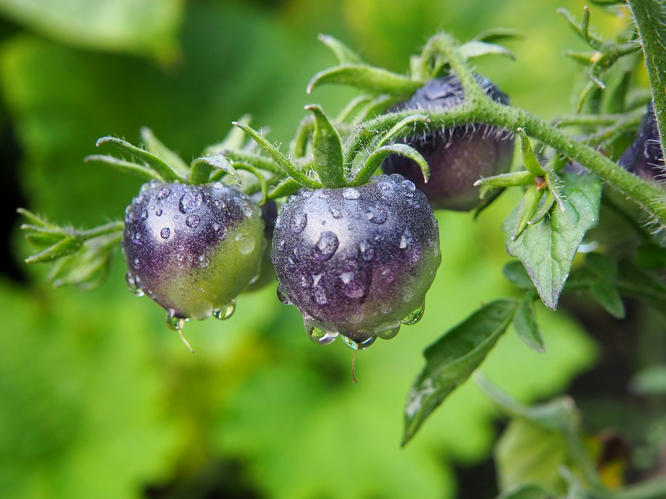
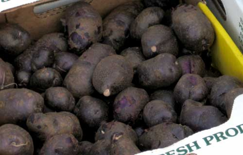
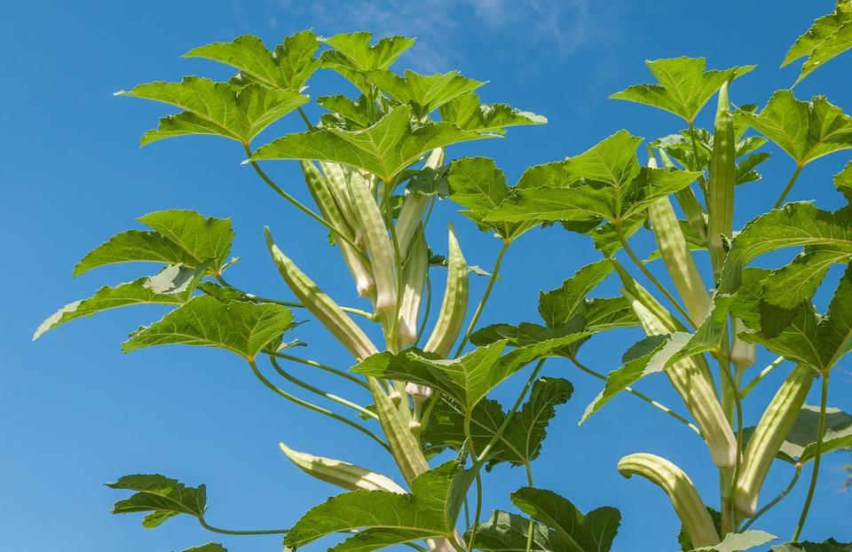

Outdooring It
Below are a few images of my favorite plants to grow in my garden. First up is a blue tomato. Pictured here is a different variety, but I prefer blue cream cherry tomatoes, which are yellow with blue wrapping down from the top. It is best to grow varieties that are easy to grow, hard to buy, unique and most importantly, delicious!

Sticking with the purple themed food, below is black or purple potatos. They taste similar to a regular potato with a bit more starch.

The last vegetable I would recommend to grow is okra. A great source of vitamins and minerals, it is easy to grow and to cook(once you learn how to avoid making it slimy). I recommend roasting it in the oven.
